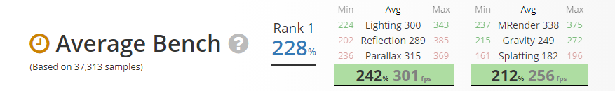

-

$46.67/month for 6 months - $60.91/month for 6 months -
- Specifications
- Manufacturer: Intel
- Core Count: 6
- Core Clock: 3.7 GHz
- Boosy Clock: 4.7 GHz
- TDP: 95 W
- Series: Intel Core i7
- Microarchitecture: Coffee Lake
- Core Family: Coffee Lake
- Socket: LGA1151
- Integrated Graphics: Intel UHD Graphics 630
- Maximum Supported Memory: 128 GB
- ECC Support: No
- Packaging: Boxed
- Includes CPU Cooler: No
- L1 Cache: 6 x 32 kB Instruction, 6 x 32 kB Data
- L2 Cache: 6 x 256 kB
- L3 Cache: 1 x 12 MB
- Lithography: 14 nm
- Simultaneous Multithreading: Yes: Hyper-Threading
- 
-

- Features
- - Legacy Intel® Core™ Processors.